← Back
The Lo Chair
Furniture
The Lo Chair draws inspiration from classic Scandinavian lounge chairs, including Hans J. Wegner's CH07 for Carl Hansen & Son and the Eames Lounge Chair. The design carries their elegance into a distinctly modern, minimal form while simplifying fabrication for more accessible and efficient production. Structural integrity, proportion, and ergonomics guide the construction: a 105-degree angled backrest and subtly tilted seat support a relaxed and comfortable sitting position.
Shortlisted / Buildner The Architect's Chair #4
more...View the official competition results
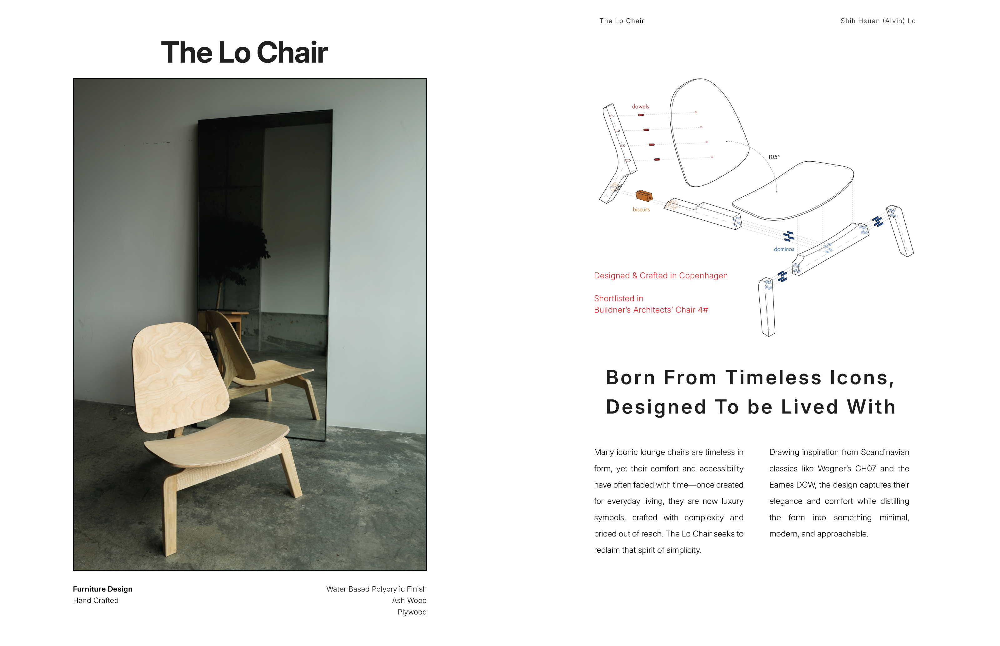
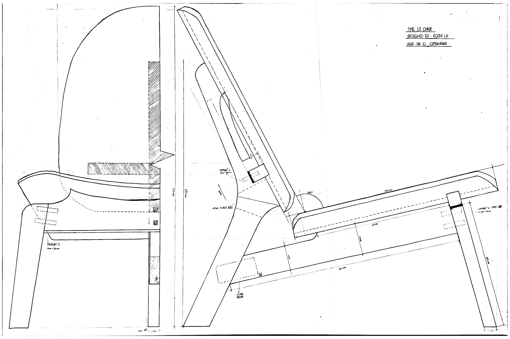

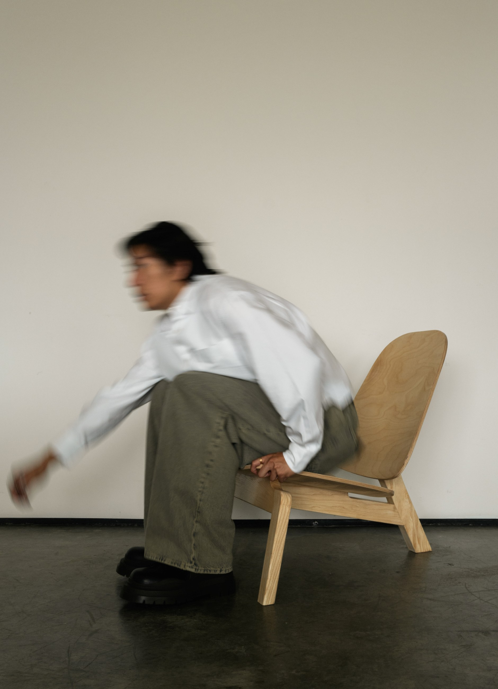
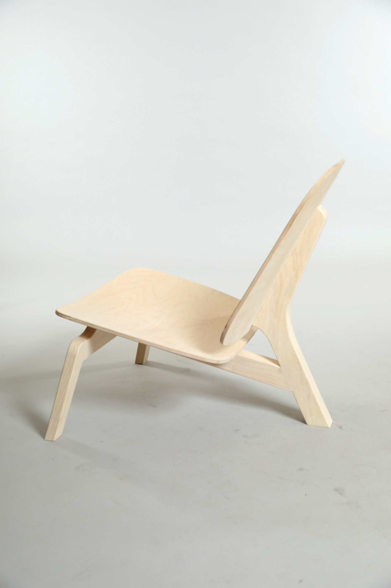
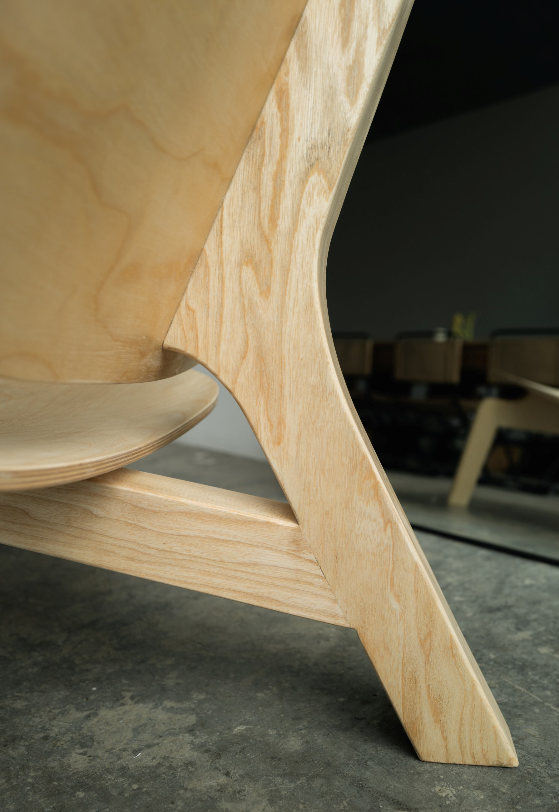
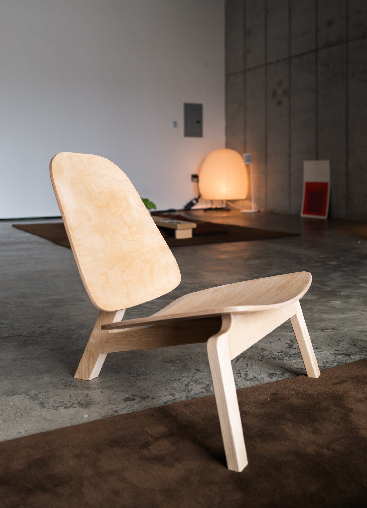
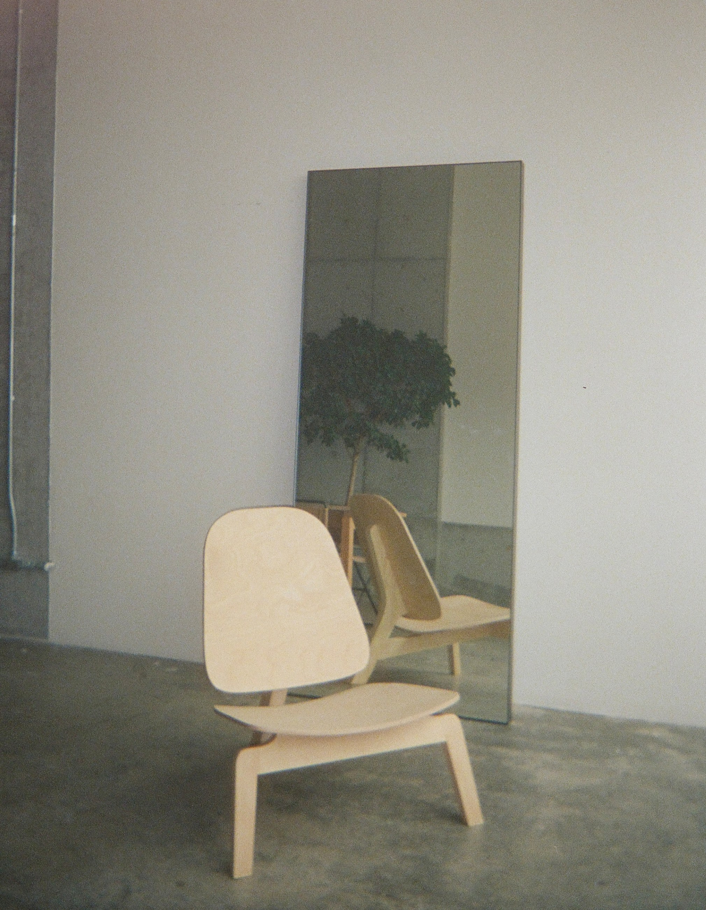
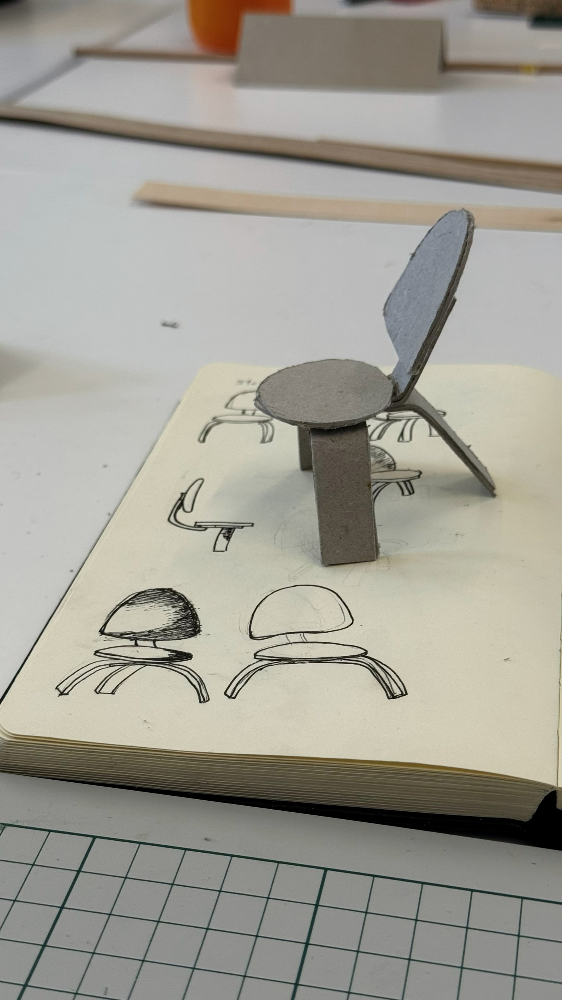
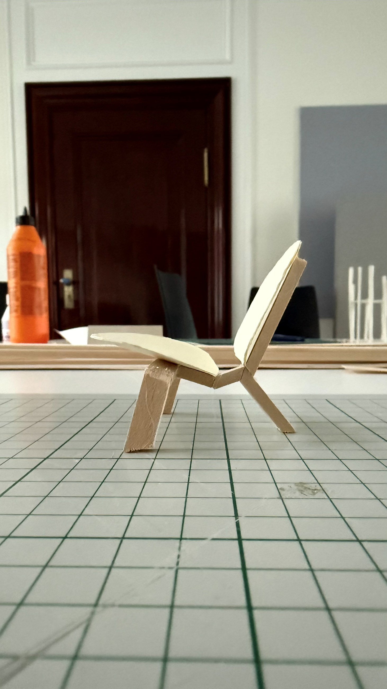
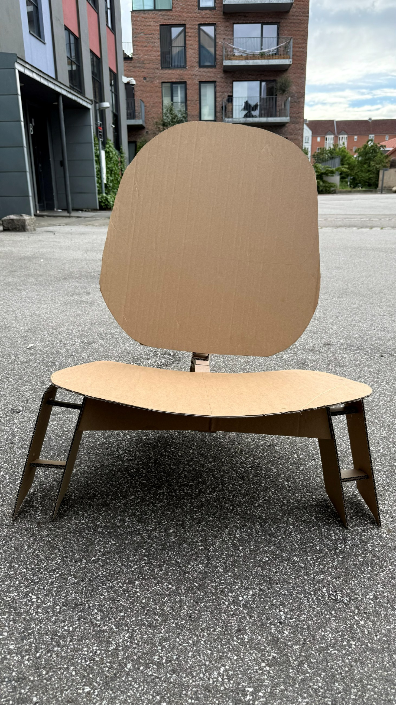
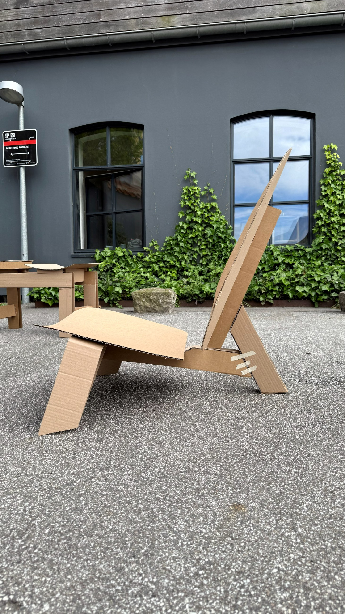
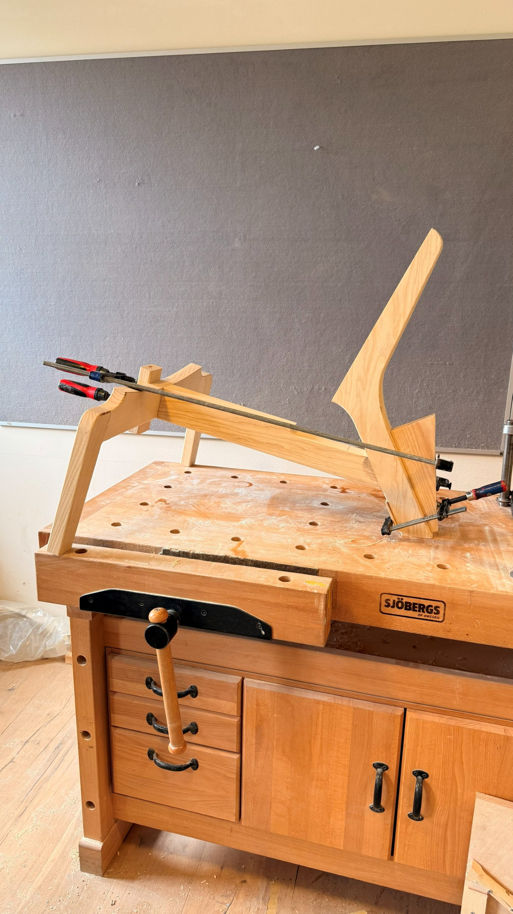
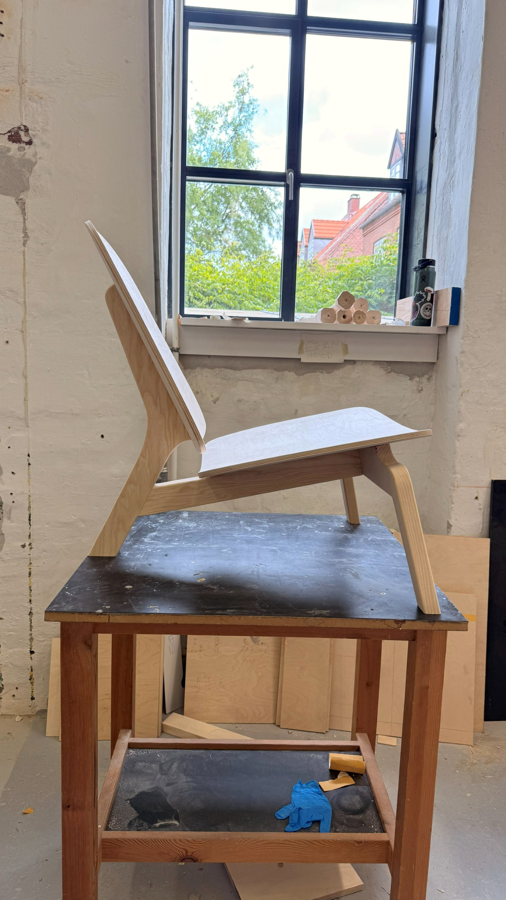